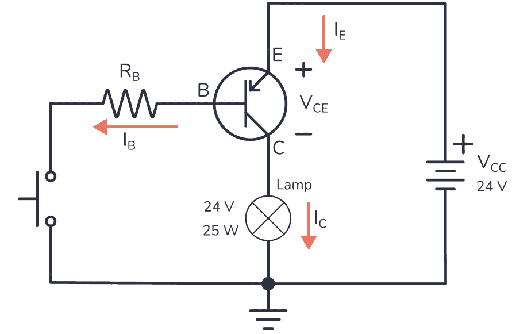
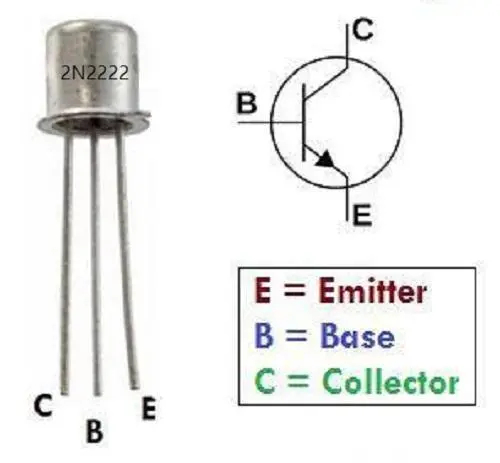

A Bipolar Junction Transistor (BJT) is a "faucet" for electricity.
Cutoff (OFF):
Saturation (ON):

NPN Transistor as a Switch
Amplification Power:
If a transistor has a Gain (β) of 100, 1mA at the base can control 100mA at the collector!
BJTs look identical from the outside. You MUST know the pinout.
NPN vs PNP:
Look for the flat side of the TO-92 package to identify pins 1, 2, and 3.

Flat face facing you: E - B - C
Challenge: Can you make the LED light up just by touching the wire with your finger? (Using your body's resistance as the Base trigger!)
Tomorrow: Digital Logic—How millions of these transistors work together to "Think."